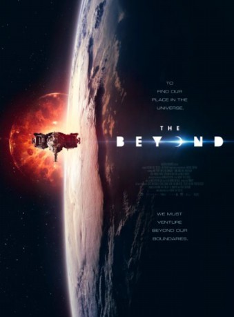
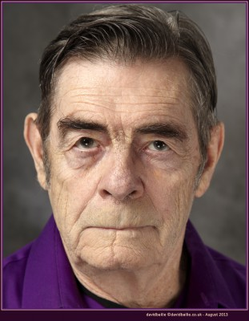
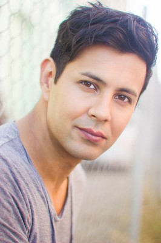

#7999 Beyond, The *OmU*
Alternativ: Place Promised In Our Early Days, The (Originaltitel)
 
 IMDB-Wertung: 4.8 / 10
IMDB-Wertung: 4.8 / 10  Metascore: 0
Metascore: 0 
Set in 2019, The Beyond chronicles the groundbreaking mission which sent astronauts - modified with advanced robotics, through a newly discovered wormhole known as the Void. When the mission returns unexpectedly, the space agency races to discover what the astronauts encountered on their first of its kind interstellar space journey.
Englisch
Jahr: 2017
Dauer: 91 Minuten
FSK:
Land: England Studio: Gravitas VenturesTonspuren:
Untertitel:
Auflösung: 720p (1280x538) Größe: 2897 MB
Genre: Horror, Sci-Fi
Regisseur: Hasraf Dulull
Drehbuch: Hasraf Dulull
Soundtrack: Aleah Morrison, Matthew Wilcock
Darsteller:
-  David Bailie als Jacob
 Jane Perry als Gillian
Jane Perry als Gillian- Brian Deacon als David Johnson
- Kosha Engler als Jessica 2.0
- Amy Argyle als US Mission Controller
- Nigel Barber als Alex Grant
- Bruce Chong als Dr. Sebastian Lee
-  Julian Graham als Jim Marcell
- Noeleen Comiskey als Jessica Johnson
- Melissa Graham als News Anchor
- Tom Christian als Carl Roberts
- Alissa Juvan als Space Station Astronaut
- Zack Schor als US News Anchor
- Georgina Blackledge als Alice Lamont
- Alexander Clay als Soldier 2.0
- Karen Brace als ISS Computer System
- Neil Percival als Charles Higgins
- Nick Kokotakis als Lee Cooksley
- Jessica Blake als Candidate 2
- Ezra Khan als Dr. Kuresh
- Alex Duong als Video Blog Citizen 1
- Peter McAllister als Protester
- Wes Nike als Jim Marcell
- Zoe Cookie Levere als Vlog Citizen
- Fiona McGee als Candidate 3
- Dare Emmanuel als Candidate - Geologist
- Roger Harding als Mission control extra
- Adam Batchelor als Candidate - AJ
- Harriet Leah Preston als Candidate 1
- Stuart Ashton als Mickey Locross
- Cheah Wen Jin als Malaysia Cilvilan
- Alek Usemee als Candidate - Russian Virologist
- Aleksandr Uusmees als Candidate - Russian Virologist
- Fahimah Hedar als Malaysia Cilvilan
- Jessica Riley als Protestor
- Anderson Augustine als Vlog Citizen
- Imran Yusuf als Vlog Citizen
- Jaedon Tan Yung-Ming als Malaysia Cilvilan
- Louisa Hollway als Mary Laroux
Datei: X:\2017(A-F)\Beyond, The OmU (2017, FSK, 1280x538).mkv seit 09.01.2018
Festplatte: HD 2017(A-Z)-2018(A-F)
 Es gibt insgesamt 152 Filme in der Gruppe '2017(A-F)'
Es gibt insgesamt 152 Filme in der Gruppe '2017(A-F)'